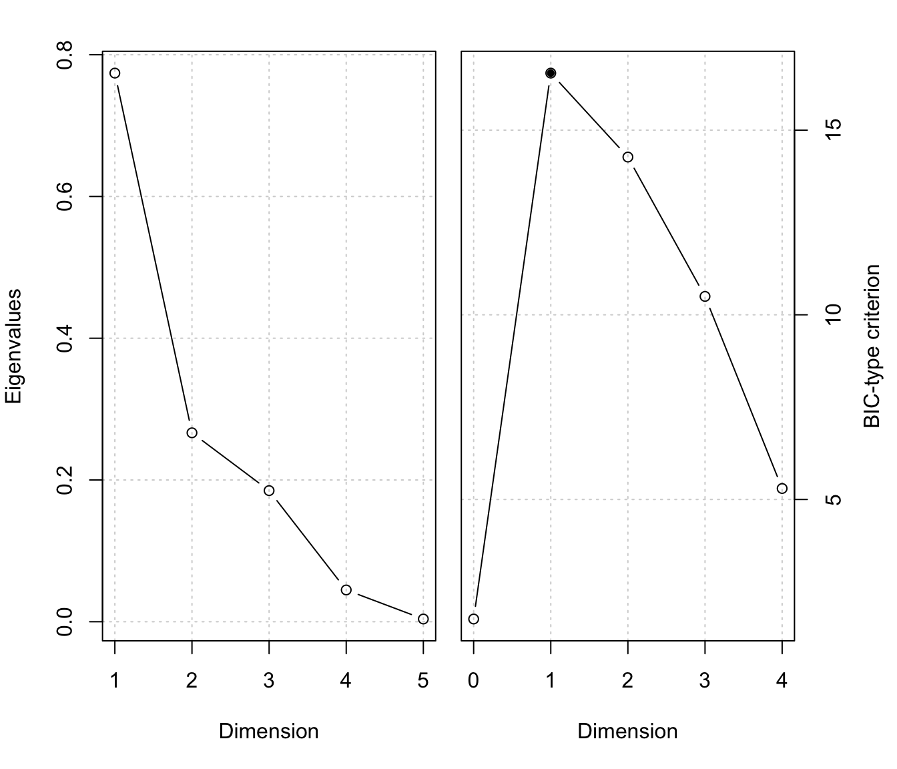
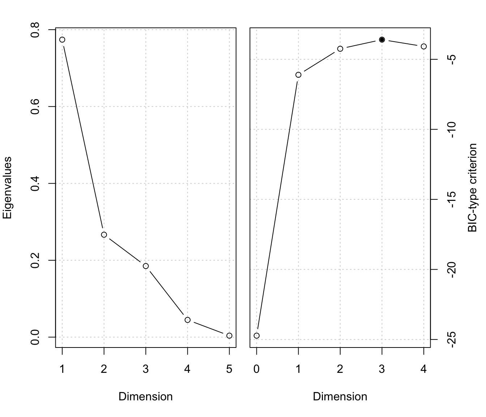

BIC-type criterion for dimensionality
msir.bic.RdBIC-type criterion for selecting the dimensionality of a dimension reduction subspace.
Usage
msir.bic(object, type = 1, plot = FALSE)
bicDimRed(M, x, nslices, type = 1, tol = sqrt(.Machine$double.eps))Details
This BIC-type criterion for the determination of the structural dimension selects \(d\) as the maximizer of $$G(d) = l(d) - Penalty(p,d,n)$$ where \(l(d)\) is the log-likelihood for dimensions up to \(d\), \(p\) is the number of predictors, and \(n\) is the sample size. The term \(Penalty(p,d,n)\) is the type of penalty to be used:
type = 1: \(Penalty(p,d,n) = -(p-d) \log(n)\)type = 2: \(Penalty(p,d,n) = 0.5 C d (2p-d+1)\), where \(C = (0.5 \log(n) + 0.1 n^(1/3))/2 nslices/n\)type = 3: \(Penalty(p,d,n) = 0.5 C d (2p-d+1)\), where \(C = \log(n) nslices/n\)type = 4\(Penalty(p,d,n) = 1/2 d \log(n)\)
Value
Returns a list with components:
- evalues
eigenvalues
- l
log-likelihood
- crit
BIC-type criterion
- d
selected dimensionality
The msir.bic also assign the above information to the corresponding 'msir' object.
References
Zhu, Miao and Peng (2006) "Sliced Inverse Regression for CDR Space Estimation", JASA.
Zhu, Zhu (2007) "On kernel method for SAVE", Journal of Multivariate Analysis.
Author
Luca Scrucca luca.scrucca@unipg.it
Examples
# 1-dimensional symmetric response curve
n <- 200
p <- 5
b <- as.matrix(c(1,-1,rep(0,p-2)))
x <- matrix(rnorm(n*p), nrow = n, ncol = p)
y <- (0.5 * x%*%b)^2 + 0.1*rnorm(n)
MSIR <- msir(x, y)
msir.bic(MSIR, plot = TRUE)

#> $evalues
#> [1] 0.774065282 0.266522812 0.184991103 0.044831693 0.003845799
#>
#> $l
#> [1] -2.472783e+01 -4.648670e+00 -1.623909e+00 -9.832561e-02 -7.376181e-04
#>
#> $crit
#> d=0 d=1 d=2 d=3 d=4
#> 1.763757 16.544599 14.271043 10.498309 5.297580
#>
#> $d
#> [1] 1
#>
summary(MSIR)
#> --------------------------------------------------
#> Model-based SIR
#> --------------------------------------------------
#>
#> Slices:
#> 1 2 3 4 5 6
#> GMM XXX XXX EEI XII EEE EII
#> Num.comp. 1 1 3 1 3 2
#> Num.obs. 33 33 9|13|11 33 13|6|14 21|14
#>
#> Estimated basis vectors:
#> Dir1 Dir2 Dir3 Dir4 Dir5
#> x1 -0.718295 -0.37622 0.272783 0.34338 -0.44492
#> x2 0.692883 -0.21553 0.442718 0.34774 -0.35976
#> x3 -0.030005 0.86679 -0.017081 0.42843 -0.21779
#> x4 -0.012651 -0.20525 -0.045749 0.69746 0.69736
#> x5 -0.053895 0.13621 0.852763 -0.30193 0.37266
#>
#> Dir1 Dir2 Dir3 Dir4 Dir5
#> Eigenvalues 0.77407 0.26652 0.18499 0.044832 3.8458e-03
#> Cum. % 60.74642 81.66236 96.17993 99.698193 1.0000e+02
#>
#> Structural dimension:
#> 0 1 2 3 4
#> BIC-type criterion 1.76376 16.5446* 14.271 10.4983 5.29758
msir.bic(MSIR, type = 3, plot = TRUE)

#> $evalues
#> [1] 0.774065282 0.266522812 0.184991103 0.044831693 0.003845799
#>
#> $l
#> [1] -2.472783e+01 -4.648670e+00 -1.623909e+00 -9.832561e-02 -7.376181e-04
#>
#> $crit
#> d=0 d=1 d=2 d=3 d=4
#> -24.727830 -6.105708 -4.246576 -3.595215 -4.080442
#>
#> $d
#> [1] 3
#>
summary(MSIR)
#> --------------------------------------------------
#> Model-based SIR
#> --------------------------------------------------
#>
#> Slices:
#> 1 2 3 4 5 6
#> GMM XXX XXX EEI XII EEE EII
#> Num.comp. 1 1 3 1 3 2
#> Num.obs. 33 33 9|13|11 33 13|6|14 21|14
#>
#> Estimated basis vectors:
#> Dir1 Dir2 Dir3 Dir4 Dir5
#> x1 -0.718295 -0.37622 0.272783 0.34338 -0.44492
#> x2 0.692883 -0.21553 0.442718 0.34774 -0.35976
#> x3 -0.030005 0.86679 -0.017081 0.42843 -0.21779
#> x4 -0.012651 -0.20525 -0.045749 0.69746 0.69736
#> x5 -0.053895 0.13621 0.852763 -0.30193 0.37266
#>
#> Dir1 Dir2 Dir3 Dir4 Dir5
#> Eigenvalues 0.77407 0.26652 0.18499 0.044832 3.8458e-03
#> Cum. % 60.74642 81.66236 96.17993 99.698193 1.0000e+02
#>
#> Structural dimension:
#> 0 1 2 3 4
#> BIC-type criterion -24.7278 -6.10571 -4.24658 -3.59522* -4.08044